Click on any of the images to view more about the project
Personal Projects
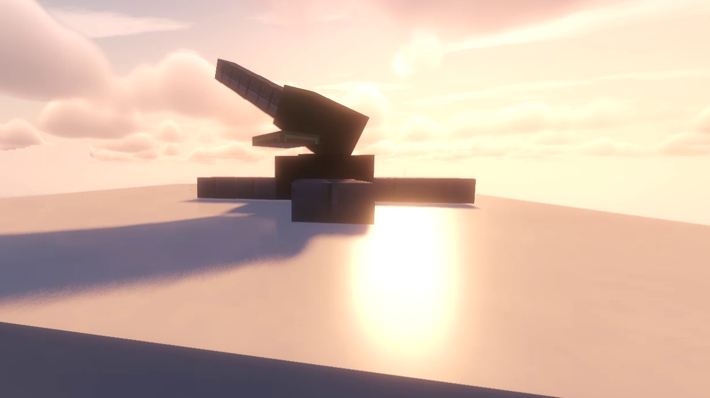
FortressGuns (2022 - Present)
Made with: Java, Maven, Spigot API, NMS, TomlJ, Git, Github
FortressGuns is a Minecraft Plugin which was initially started as an experiment to see how far I could push the base game without going into Modding territory. The plugin adds various artillery pieces with different mechanics and behaviours which can be used by players to lob projectiles at distant targets (Cause who doesn't like shooting stuff?).
Because of the mechanics I wanted to implement, as well as the experimental nature of the plugin, I've encountered multiple challenges regarding implementation such as inventory management. A lot of other challenges like projectile-projectile collisions and custom explosions do not have API functions or support, which have required me to both reverse-engineer Mojang classes and write my own solutions to suit implementation. Inventory management in particular although not difficult to implement, was very daunting due to my past experience programming Hypixel Bedwars. In the Spigot API, listeners which handle inventory events do not by directly tell developers whether the player has moved an item into another inventory, or whether it was a movement of the item to the hotbar or another slot of the inventory.
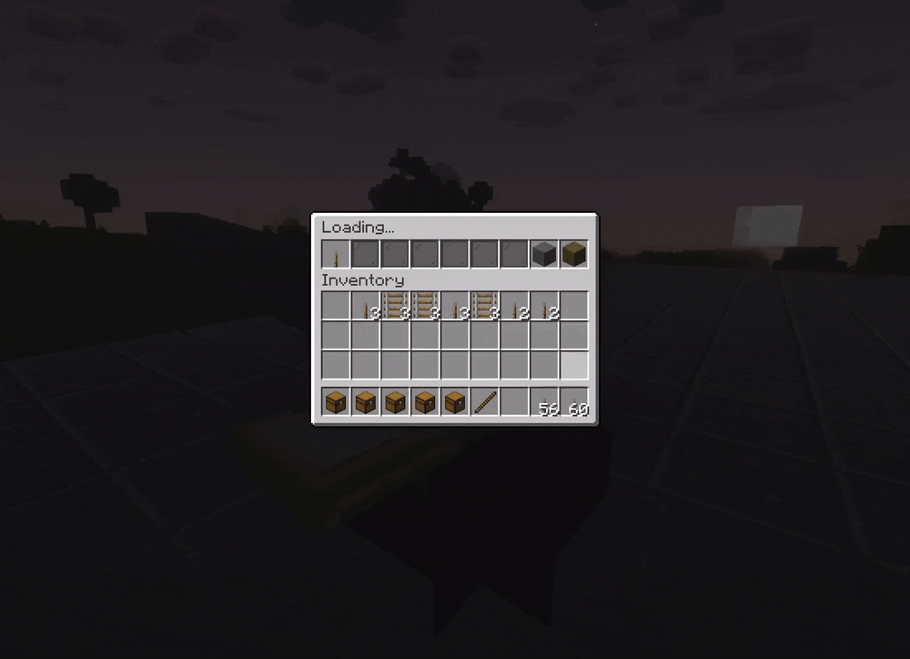
Inventory operations for some of the artillery. Other types have different functions.
Due to all of the different actions a player can make which accomplish the same thing (such as shift-clicking or using the numbers on the keypad) it can be difficult to determine what function to run and for what action. Because of this it is very easy to get unmaintainable spagetti code if approached head-on.
Learning from my past experience, I instead chose to break up the problem into multiple components, which allowed me not only to organize the logic easier, but also quickly implement different functions for different inventories which had different mechanics while keeping everything maintainable.
Below are some other GIFs showcasing other mechanics and features in the plugin.
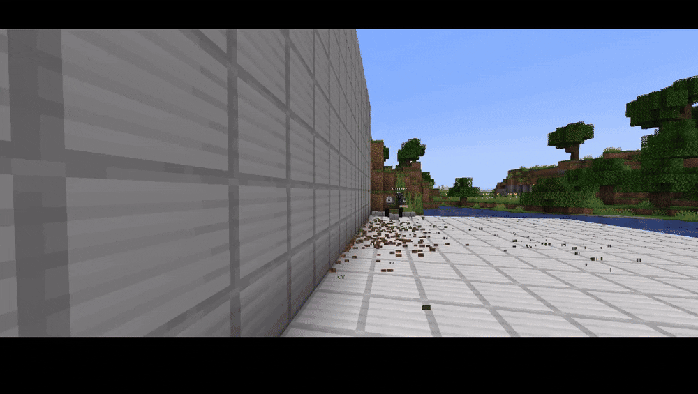
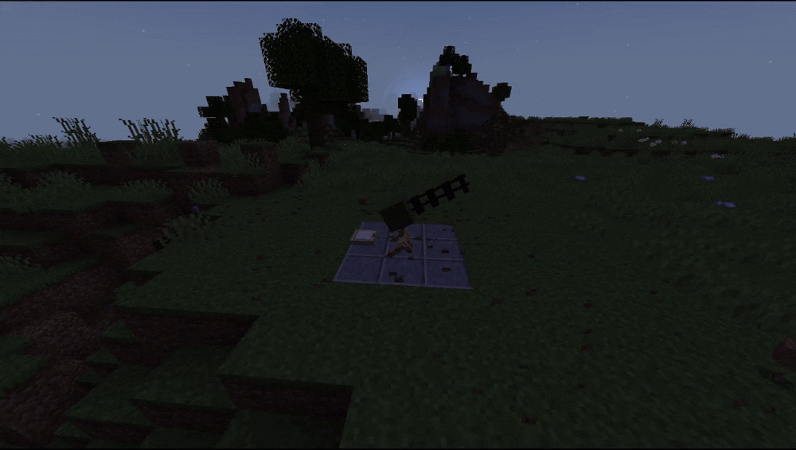
Showcase of some other mechanics in the plugin, including riccochets and projectile-projectile collisions.
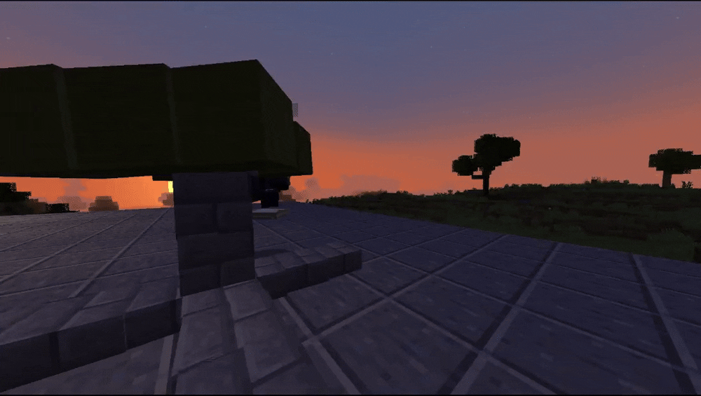
Showcase of the missile launcher (Pretty much a SAM site)
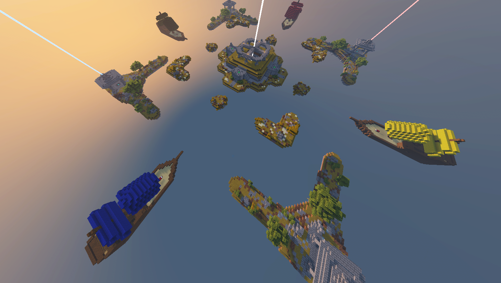
Hypixel Bedwars (2020 - 2022)
Made with: Java, Maven, Spigot API, Git, Github
In Grade 11 (Late 2019) I met a few friends who played on the Minecraft Server Hypixel for one of the minigames on there called "Bedwars" while I was learning about Plugin development in Minecraft using the Spigot Toolchain. One of them jokingly suggested that I recreate the minigame so that we could host private matches instead of playing on public Lobbies in Hypixel.
That joke eventually became a challenge which I actually took seriously; I thought it would be good practice to become more familiar with programming and Java in general even though I initially had no idea how to approach such an endeavor. After some thought I decided that it would probably be best to break up the project into components, and start off with (what I thought at the time) would be one of the harder components to create. That would give me an idea going forward on whether I should continue or try an easier project instead.
This component ended up surprisingly being the TNT and explosives in the game. In Hypixel, explosions are modified so that some blocks which are part of the map are completely impervious to explosions while others would block explosions even though they wouldn't in the base game. I initially thought that Spigot had some customization for how base explosions in the game would work, but this wasn't the case.
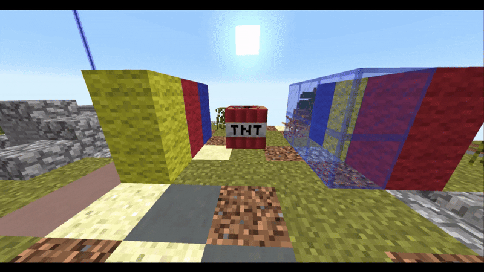
A GIF showcasing the customized TNT for the game. Glass in Bedwars is blast resistant unlike the base game.
I think I was fortunate as at the time I was learning about vectors in Physics, and seeing them being used for velocity but also positions of objects gave me ideas for how I could approach the problem. I actually talked to my Physics teacher (Thank you Mr. Stephenson!) for how I could get positions further in a direction given a vector, and then thought of a way to generate them using trigonometry. It was a very eye-opening experience which made me appreciate a lot of the mathematics and other topics I learned in school as I discovered use-cases for them while writing the plugin.
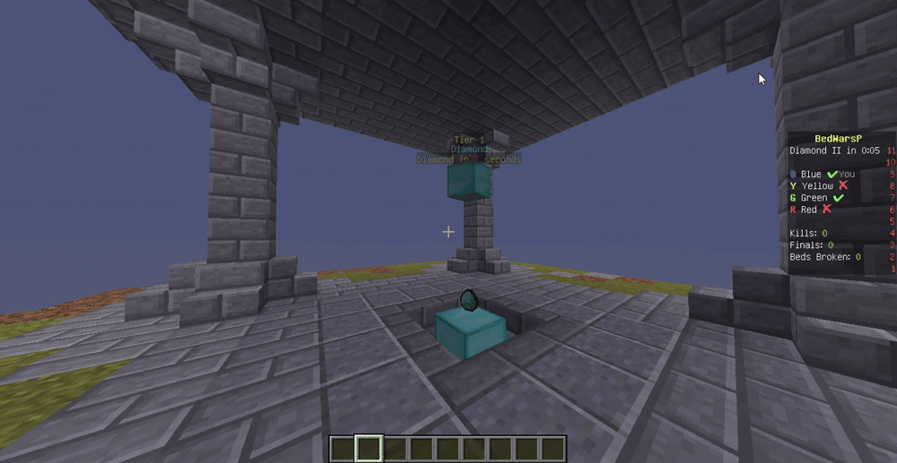
A GIF showcasing a prototype for the diamond generators in the plugin during development The generator is synchronized to the scoreboard of the game
I eventually completed the development of the plugin in 2022 and held play-testing with the same group of friends who suggested I write it. According to their feedback it was surprisingly accurate to the official version on Hypixel minus a few small details that I thought weren't significant. For me however I found it more interesting looking at the code to learn about how messy it was when I first started, and then how it gradually got more structured and organized. I think of it as a way to show how I've improved while learning.
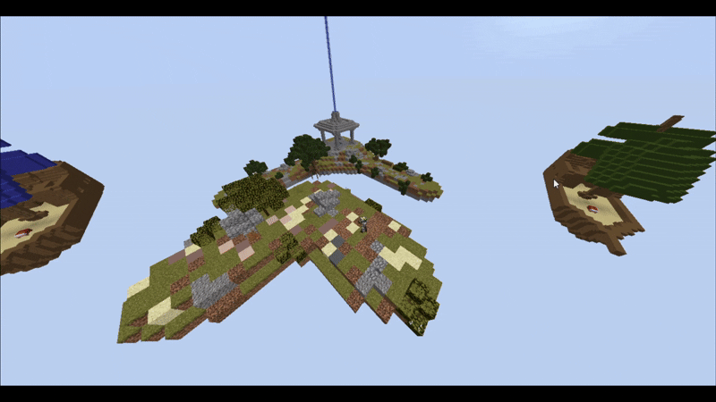
A GIF showcasing the popup-tower component for the game.
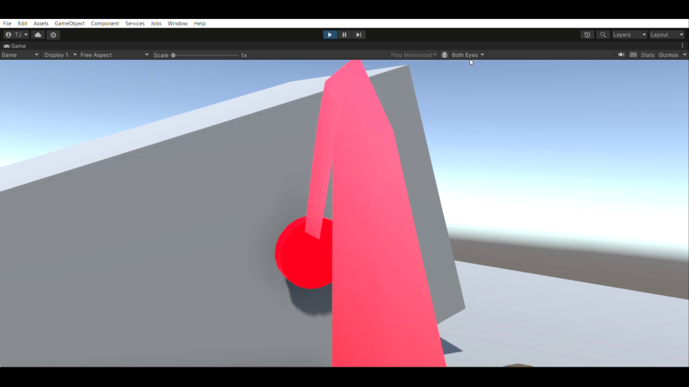
SerenityHacks (2024)
Made with: C#, Unity Game Engine, SteamVR, Blender, Git, Github
In early 2024 I got an email about a hackathon taking place on campus and decided to attend with a group of 3 friends. Since me and another member of our team were enrolled as Virtual Reality students at our University we decided to leverage our priviledges to use the VR room on campus as our base of operations for the duration of the event. (I like to say that we "Hijacked" the room because technically we got permission to use the room from our prof AFTER the hackathon ended. We did our best to respect the room and the rules already in place, but it turned out he was still fine with us using it for the Hackathon regardless. :p)
When it was announced that the theme of the hackathon was mental health we initially held the idea of using AI in our solution because it was an emerging technology, although we were still at a loss for what to do which would make it stand out. The obvious idea would be some sort of chatbot for the user, something like a virtual psychiatrist, but looking at the team names which many of the groups chose, it felt that this would be a common theme.
So we were thinking for a bit and then I tossed around the idea about using the VR headsets to create a solution, suggesting that we could use it to create virtual environments that would calm users down. I thought it was a good idea at the time since it was very unlikely that any other group would be doing anything remotely similar, (The VR course had a class size of around 30-ish individuals, and I doubt many people would bring a VR headset to a hackathon) and it could make our project stand out because of that.
One problem: Because it was the start of winter courses, although we were enrolled in the VR course, we didn't have much knowledge on VR yet because we had only just finished the first lectures of the semester. Because of these complications we decided to delegate the tasks of the project to members who had even the slightest bit of experience working with the topic. For me that was mainly for the 3D environments which we would need to put the users into.
I was initially thinking about creating a 3D mesh, UV mapping and texturing it to create the environment, however from my past experience working with Blender I knew that would not be something I would be able to create in less than 12 hours, especially if I wanted to get it to a realistic-esque quality. Further more I would still need to find the textures and model out smaller objects such as plants and trees for the scenery.
Instead of over-complicating the solution I opted instead to use HDRIs which would function as environmental images which could be used to achieve a similar effect with much less work. The rest of the team also suggested that we stick with them until I could either create a 3D model or find another solution to the problem. In the end we decided to stick with the HDRIs in the solution due to the time constraints and difficulty of making a suitable environment model.
Despite this, we still were able to walk away with the Best Overall Solution in the hackathon, which I think surprised all of us at the closing ceremony. You can find the submission on Devpost here, and the instagram posts from the organizers here
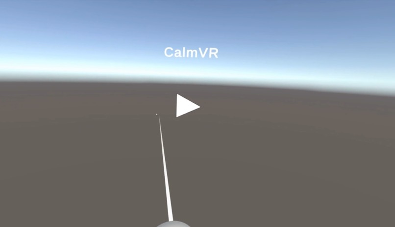
Screenshot showcasing implementation of interaction functionality
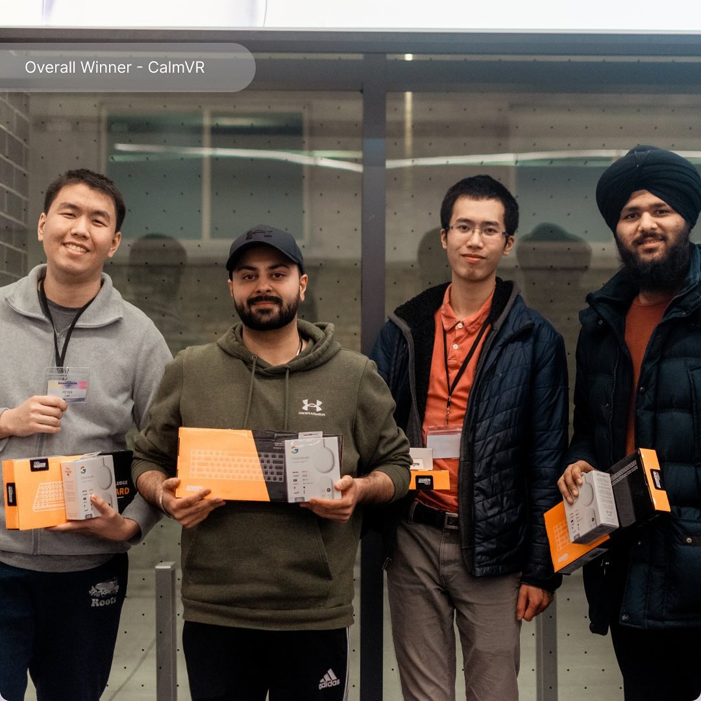
Image of me with the other awesome group members: Peter, Mohit and Prahb.
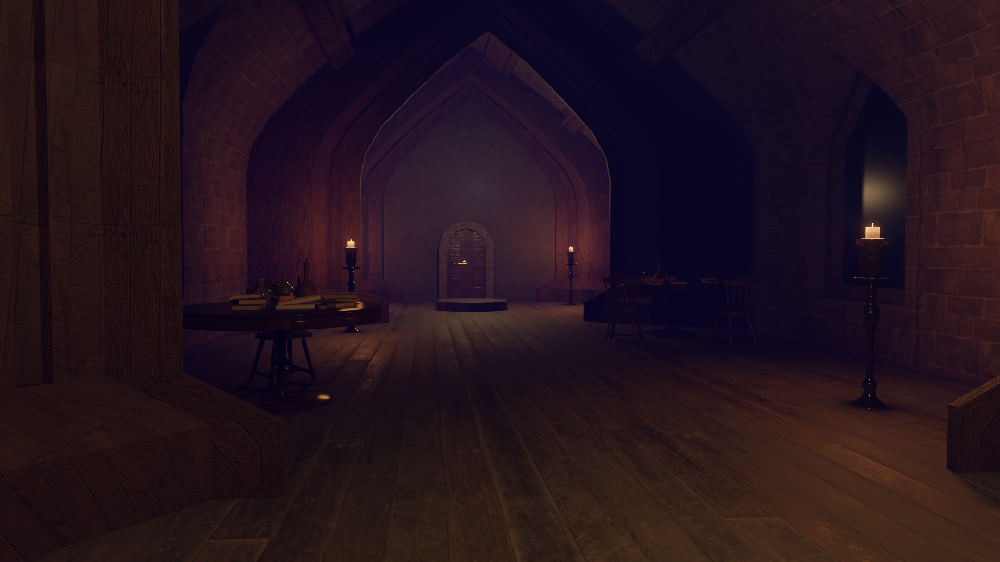
Hotdogs and Magic (2024)
Made with: C#, Unity Game Engine, SteamVR, Git, Github, Blender
Back in 2024 I teamed up with Peter from SerenityHacks to create what was initially a VR project for the Virtual reality course we were both taking. We initially thought of creating a game where you would have two players dueling each other using magic spells similar to the already pre-existing VR game Blaston (Seen here)
Because I had experience with 3D modelling and art, I was initially tasked with the creation of 3D assets in Blender for use in the game. For this I created rough sketches of the environment to get an idea of the appearance before first modelling the general shape of the room as a 2D outline.
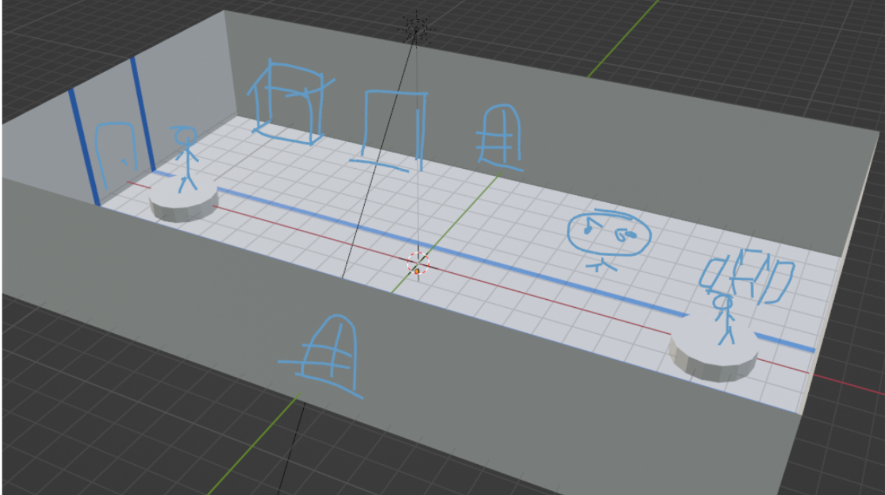
We used Blender to create a project proposal sketch which was approved by the professor.
From there, details weren't too difficult; I extruded the outline into a 3D shape and used portions of it to create other details of the room which were then stitched back together at the end. I also reused some old assets I had such as tables and books from non-CS related projects to serve as interactable objects in the scene.
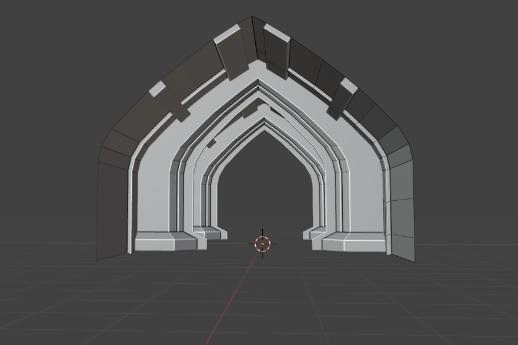
Work in progress screenshot of the environment
Despite the mesh being relatively easy to model out, I still needed to consider the amount of polygons which would be in the final assets. Because the assets that I had imported in were for projects which solely focused on visual artistic value, alot of them had many polygons which I had to simplify for use in the game. This created a tradeoff between the visual quality of the environment and the performance of the game. I still wanted the environment to look decent however, so I also tried to bake some roughness and normal maps into the objects which Unity supported, allowing some of the assets to still have some roughness and detail without much of the extra performance overhead. After that I baked the textures onto image files and used them to import the models into Unity.

Final render of the environment in Blender. If I had made the models a tad bit more complex and changed around some shaders I think it would've looked a bit better.
We still needed to implement the functionality of the game, So while I was busily modelling, Peter was busily coding in C# to get the AI of the enemy wizard, tutorial video as well as an interaction system. I later stepped in to help fix a few critical bugs regarding the AI as well as refactor the code to use an inheritance-based system which improved organization of the project and allowed us to also implement events for damaging entities in the game.

Part of the demo video converted to a GIF format. The video was recorded by my awesome partner Peter which you can find on his website.
Contrary to just completing the project for the course, we also volunteered to use it in Science Rendezvous 2024 where we showcased it to the general public. For this we took extra time to polish up the game as well as implement mechanics which were originally cut due to time constraints. You can find more details on the project in my partner's website here.
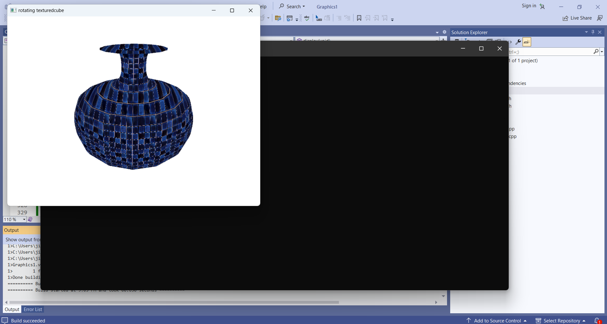
Graphics in C/C++ (2023)
Made with: C, C++, OpenGL, GLUT, Git, Github
This project was created for the final assignment of a graphics course I and a partner were taking at TMU. It consisted of a simple game engine which featured two zepplins, one controlled by the player battling the other with lasers in an environment with buildings and destruction effects.
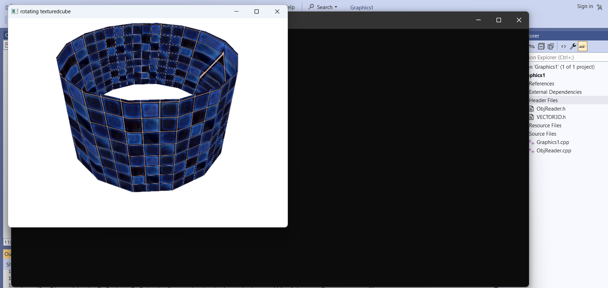
As part of the project we wrote a surface modeller which generated meshes. We then had to apply textures to those meshes.
In order to create the game, we would need to implement mechanics and functions from scratch, such as movement, AI, and attacking. This was a daunting task due to the time constraints we had for the project alongside the amount of requirements which had to be implemented.
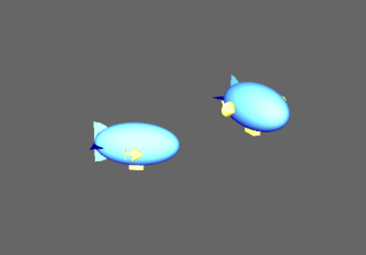
The zepplins before we applied textures onto them.
I feel like the experience that I had from writing spigot plugins helped immensely for this project; A lot of the logic from the FortressGuns plugin was used in the implementation of this project. While my partner did bring strong technical knowledge, they were less experienced with creating game engines specifically. I took initiative by organizing our code while also explaining concepts such as a ticking functions and how system time could be used to manage actions and timings.